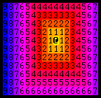

Notes on Procedural Map Generation Techniques
- Overview
- Influential Games
- Simple Room-Placement
- Binary Space Partition Rooms
- Cellular Automata
- Drunkard’s Walk
- Diffusion Limited Aggregation
- DLA with a Central Attractor
- Voronoi Diagrams
- Perlin and Simplex Noise
- You can use more than one technique
- Removing Unreachable Areas
- The Hot Path
- Telling a Story
Overview
My notes on Herbert Wolverson’s talk on procedural map generation techniques from the 2020 virtual Roguelike Celebration.
Influential Games
Rogue (1980)
- One of the first uses of procedural generation
- Generates up to 9 rooms and connects them randomly
- Used procedural generation because they needed to keep the game small
- Different map every time the game is started
- Effectively infinite replay
Dwarf Fortress (2006 - Present)
- Probably crammed the most procedural generation into one game
- Procedurally Generates:
- Massive overworld with sweeping mountain ranges, forests, volcanoes, demon-infested fortresses
- Civilizations that either like or hate each other
- Can drill down to a single person and their procedurally generated backstory
- Mid-scale
- Can zoom into any particular block on the map to find it is beautifully rendered and still matches the overall shape of the overworld
- Trees gain and lose foliage depending on their type and biome
- Their type spawns the appropriate biome
Takeaway: The randomness does not define the above games. The randomness is fed into an algorithm the generates something that approximates what you want to get, but ensures that it is different every time
Simple Room-Placement

- Start with a solid map (random rectangle)
- Fill the map with walls.
- Randomly pick a room location.
- If the map location is not already occupied by another room, add the room
- Keep picking rooms.
- Join the rooms you kept with corridors.
- Example: Using a simple dog leg algorithm that randomly switches between being either vertical first or horizontal first.
Binary Space Partition Rooms

- Similar results to random room placement, better spaced out.
- Used in Nethack
- Divide map into two. Randomly decide whether to divide vertically or horizontally.
- Divide area into two.
- Repeat.
- Use divided space for room.
- Add a gutter of one tile around to avoid rooms joining together (unless desired)
Cellular Automata

- Evolve order from chaos.
- Popularized in Conway’s Game of Life.
- Make a random map.
- Make a copy of it.
- Apply cell life rules to each tile.
- Iterate every tile that isn’t on the edge and count the number of neighbors, including diagonals.
- If there are no neighbors, then it becomes a wall
- If there is one to four neighbors, it becomes empty
- If there are five or more neighbors, it becomes a wall
- Tweak rules to suit specific game
- Iterate every tile that isn’t on the edge and count the number of neighbors, including diagonals.
- Repeat.
- Simple
- Fast
- Deterministic (same random seed generates the same results)
Drunkard’s Walk

- Find Umber Hulk. Insert beer.
- Place Hulk randomly on solid map. See what he smashes
- Hulks stop when they leave the map, or pass out after n steps.
- Start with a solid map
- Random walk through map
- Tiles get removed based on walking path
- Pick maximum number of walking steps
- Repeat.
- Guarantees the map will be contiguous
- Tends to generate maps that look like it was carved out by water.
- Ideal for creating limestone caverns and similar.
Diffusion Limited Aggregation

- Explanation
- Start with a targeted seed.
- Randomly - or not - fire particles at it.
- Dig out the last edge the particle hit.
- Start by digging out a small target seed
- Pick a random point anywhere on the map
- Pick a random direction
- Shoot a particle
- Keep shooting until you hit something
- If you hit a target area, carve out the last solid area you passed through
- Tends to give you a very winding open map
- Guaranteed to be contiguous
- Lots of ways to tweak the algorithm to make things more interesting
DLA with a Central Attractor

- More likely to always hit the target
- Randomly spawn your starting point and then shoot the particle directly at the middle of the map
- Helps ensure your get an open space in the middle
- Ideal, for example, to put a dragon with his hoard
- More interesting pattern around the edges of the map
- Can also apply symmetry down the vertical
- Use sparingly
Voronoi Diagrams

Randomly (or deliberately) placed seeds.
Each tile joins the closest seed.
Vary distance heuristic for different effects.
Iterate every point on the map and it joins the area belonging to the closest seed.
- Example Algorithms:
- Delauney triangulations
- Brute force
- Example Algorithms:
Can customize the result using a different distance algorithm to determine which group every tile joins
- Pythagorean distance
- Manhattan distance
Find the edges, place walls there and wind up with an alien cell structure
Can be used to determine spawning placement/behavior based on cell location
Can be used for effective city generation
- Apocalypse Taxi

- Uses the edges of the generated cells to determine where the roads went
- Randomly populated the content of each cell with something like “heavy industrial city”, “light industrial city”, etc.
- Apocalypse Taxi
Can be combine with other techniques
Perlin and Simplex Noise

- Basically a bunch of gradients combined together with a few variables
- Can generate it in either two or three dimensions
- X/Y Value: gives a number in the range \([-1,1]\)
- Smoothly moving either up or down
- Continuous
- Octaves: number of gradients being mixed in.
- Gain: how long the various gradients last
- Lacunarity: adds in randomness
- Frequency: how frequently each of the various octaves peaks
- Commonly used to make an overworld/terrain map
- Problem: The gradients are kind of dull
- Can be addressed by adding a second layer of noise that is more “bumpy”
- Interpolate between smooth and bumpy gradients as you zoom in and out
- Can be addressed by adding a second layer of noise that is more “bumpy”
- Easy to implement
- Can also be used to generate realistic looking clouds, particles, wood grain
You can use more than one technique
- Can help generate maps that tell a story
- Example: Use BSP to generate a more structured part of the map leads into a more chaotic section generated using cellular automata
- Example: Use DLA for erosion
- Take map and then use DLA to fire particles at it to blast parts of the map away
- Map becomes more organic-looking while keeping its basic structure
- Example: Mix procedurally generated content with human-made prefabs
Dijkstra Maps

- Explanation
- Start with 1 or more starting points.
- Rest of the map ” sentinel” value - unreachable
- Set points adjacent to start to 1.
- Points adjacent to those 2.
- Keep going until whole map walked
Removing Unreachable Areas
- Cellular automata can give you chunks of the map that you can’t get to.
- Find Central Start
- Run Dijkstra
- Cull tiles without a valid distance.
- Or hide it for underground levels
Finding a Starting Point
- Find a desired starting point
- Find closest open tile for actual start.
Finding an Endpoint
- Use distance to target
- Use Dijkstra to find farthest point
The Hot Path
- Path-find from start to end
- Dijkstra Map with the path as starting points.
- \(<n\) distance is “hot path”
- Can use A* algorithm
- Can be used to minimize branching in game map by culling irrelevant parts of the map outside the hot path.
- Or “bonus” content to reward exploration of the hot path.
Telling a Story
- Rooms are ordered.
- Story progression is in order, but RNG is retained
- Maybe room 5 has a locked door, meaning the key must be in rooms 1-4.
Takeaway: Guide the randomness and use algorithms to check the randomness.
References:
Source Code for Talk: GitHub Repository
Online Book: Roguelike Tutorial - In Rust